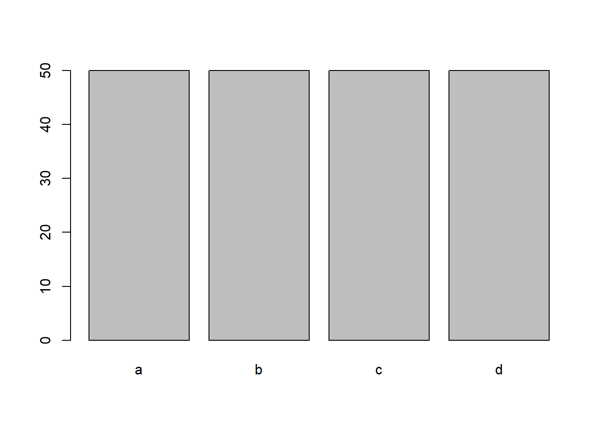

Chapter 15 Class 14: 10 10 2020 GLMs
15.1 What are GLMs
Here we talk about link functions
Illustrate how a link function can be used to ensure that a prediction only returns admissible values
a<-0.04
b<-0.08
par(mfrow=c(2,2))
xs<-seq(-30,20,by=0.01)
plot(xs,ilogi(lp(a,b,xs)),ylim=c(0,1))
abline(h=0:1,lty=1)
xs<-seq(-30,20,by=0.01)
plot(xs,ilogi(lp(0.9,12,xs)),ylim=c(0,1))
abline(h=0:1,lty=1)
xs<-seq(-3,2,by=0.01)
plot(xs,ilogi(lp(0.9,12,xs)),ylim=c(0,1))
abline(h=0:1,lty=1)
xs<-seq(-1,1,by=0.01)
plot(xs,ilogi(lp(0.9,12,xs)),ylim=c(0,1))
abline(h=0:1,lty=1)
15.2 An example analysis
Here we talk about GLMs
set.seed(121)
#define sample size
n<-100
#get a predictor variable
low<-30
high<-90
xs1<-runif(n,low,high)
#get a second potentially predictor
xs2<-rgamma(n,10,10)
#define linear predictor
lp1<-0.01+0.05*xs1
#get the mean value
Eys1<-exp(lp1)
#get actual data
ys1<-rpois(n,Eys1)We can plot the data

Now, we can fit some models to data
lm1A<-lm(ys1~xs1)
lm1B<-glm(ys1~xs1)
glmPoi<-glm(ys1~xs1,family=poisson(link="log"))
glmGau<-glm(ys1~xs1,family=gaussian(link="log"))and we can show these overlayed on data - wtf is going on…?
plot(ys1~xs1)
xs<-seq(low-5,high+5,by=0.5)
novosdados<-data.frame(xs1=xs)
predslm1A<-predict(lm1A,newdata=novosdados)
predslm1B<-predict(lm1B,newdata=novosdados)
predsglmPoi<-predict(glmPoi,newdata=novosdados,type="response")
predsglmGau<-predict(glmGau,newdata=novosdados,type="response")
lines(xs,predslm1A,col=2,lty=2,lwd=3)
lines(xs,predslm1B,col=3,lty=3,lwd=3)
lines(xs,predsglmPoi,col=4,lwd=2)
lines(xs,predsglmGau,col=5,lty=2,lwd=2)
legend("topleft",legend=c("Linear model via lm","linear model via glm","Poisson GLM","Gaussian GLM"),lwd==c(3,3,2,2),col=c(2,3,4,5),lty=c(2,3,1,2),inset=0.05)
Just for fun
## df AIC
## lm1A 3 718.4863
## lm1B 3 718.4863
## glmGau 3 586.4525
## glmPoi 2 564.2675Diagnostics
